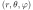
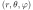
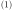
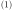
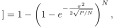
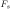
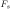

Next: February – Voronoi tesselation Up: Blog posts 2022 Previous: Blog posts 2022 Contents
There is quite a pile of literature on the subject of the inverse of a Gaussian distributed variable (this should not be fixed with inverse Gaussian distribution – it is a different matter). In fact, the inverse distribution is ill-behaved; the mean and variance does not generally exist.
I came up with a simple approximation that works well if the mean is large enough and the variance is small enough (I have not worked out the details of the exact conditions for this approximation. However, the results can be verified by Monte Carlo simulations).
First, approximate the Gaussian distributed variable
 by a log-normally distributed variable
 Lognormal
by a log-normally distributed variable
 Lognormal with corresponding mean and variance, i.e.
with corresponding mean and variance, i.e.


 and
 as an easy exercise for the reader.
and
 as an easy exercise for the reader.
Using the theory of log-normal distribution, the inverse of  is now given by
 Lognormal
Lognormal
That's it!
References: